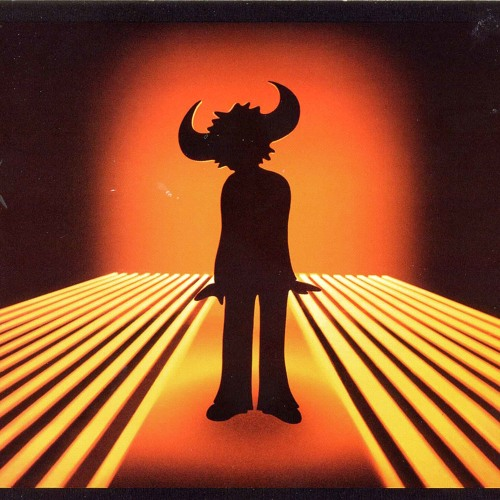

Tallulah
Song by Jamiroquai
Original Video

She's gone away
Flying out on a jet plane
Told me, she won't be back again
And Talullah is her name
Well, I got this thing, girl
I wanted to say to you
Talullah, I'm still missing you
Baby, can't you stop that plane
Turn it around, I still love you, baby
Tell the captain I'm to blame
There's ink stained with tears
All these letters from my heavy heart
This is what I always feared
Sparks would fly and we would break apart
Gotta stop that plane
Turn it around
Stop that plane
And just turn it around
Stop that plane
And turn it around for me
There's a hole in my soul
And I'm loosing control
And it's not to late for me to take
This love somewhere else, baby
Can't you see my mind
I need you all the time
And it's not too late for you to turn
That plane around, come see me, baby
She's gone away
Flying out on a jet plane
Told me, she won't be back again
And Talullah is her name
I curl up tight
So alone, I can't sleep at night
Return to sender, that's me tonight
Stop that plane, turn it around
I still love you, babe
Tell the captain I'm to blame
I'm to blame, I'm to blame